Royal Documentation Collection
The Royal Documentation Collection preserves surviving educational records, certificates, examination results, strategic studies, and miscellaneous artifacts associated with the life and career of Orestis II.
Exhibit Series A - The Royal Archives of Learning
The following documents record the educational progression of Orestis II through various institutions.
{kind=link}
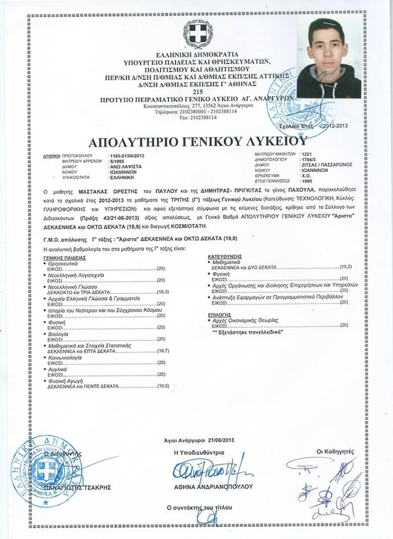
{kind=link}
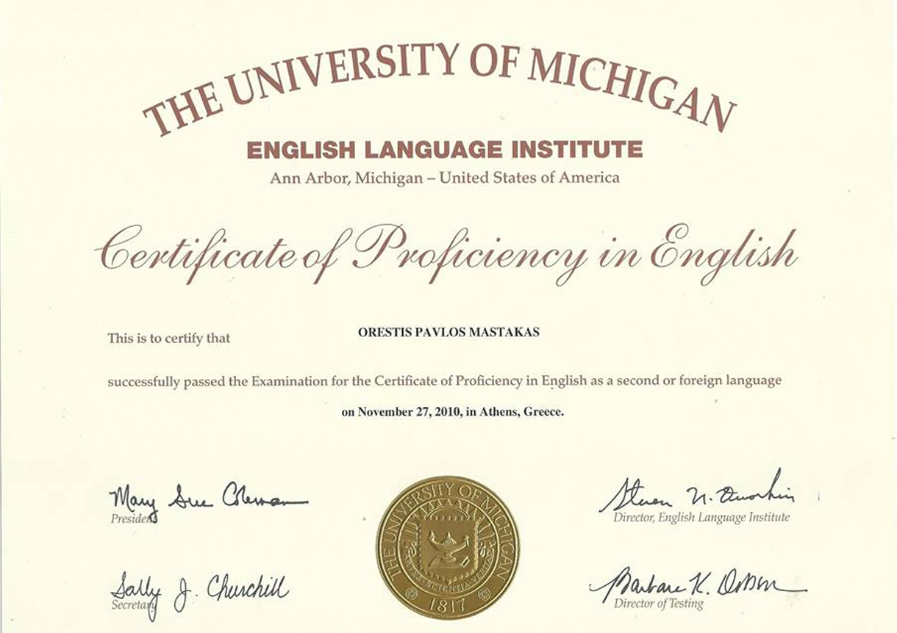
{kind=link}
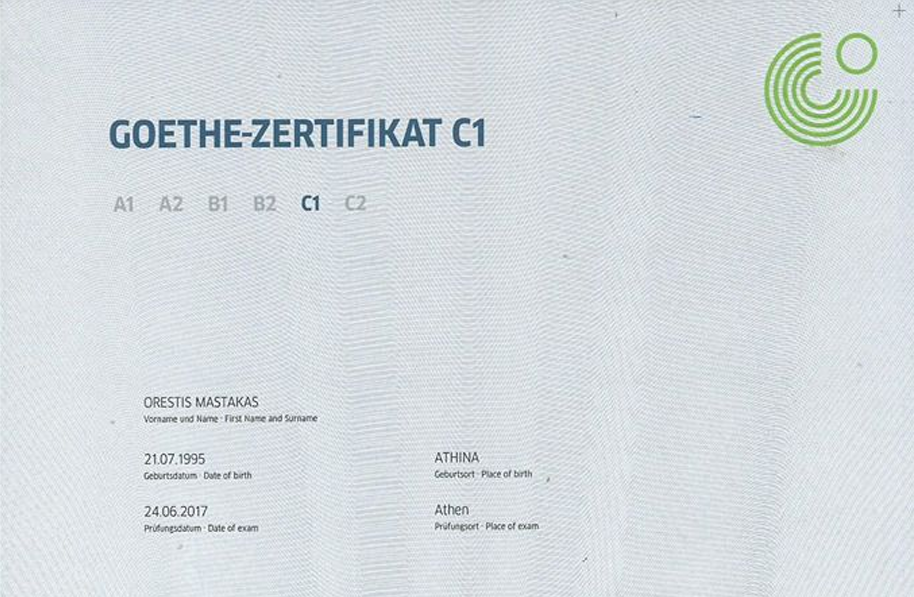
{kind=link}
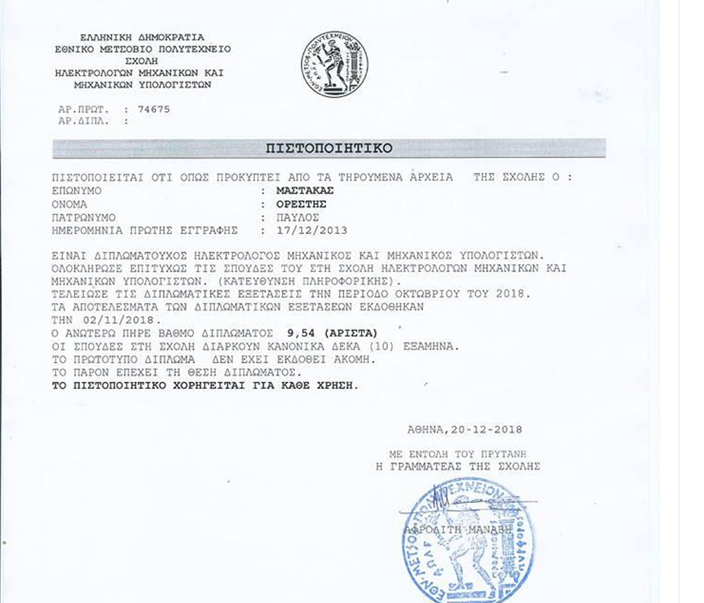
{kind=link}
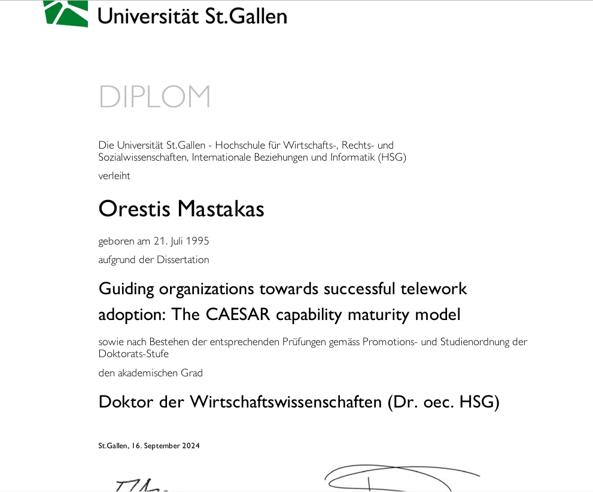
Exhibit Series B - The Capability Trials
During his service at the European Central Bank, Orestis II participated in the institution's internal Capability Test. Surviving records indicate a score among the highest achieved within the relevant cohort.
{kind=link}
{kind=link}
{kind=link}
Exhibit Series C - The Campaigns of the Sixty-Four Squares
The sovereign's only officially recognized athletic pursuit remains chess. Surviving records indicate a peak online rating of 2467 Elo.
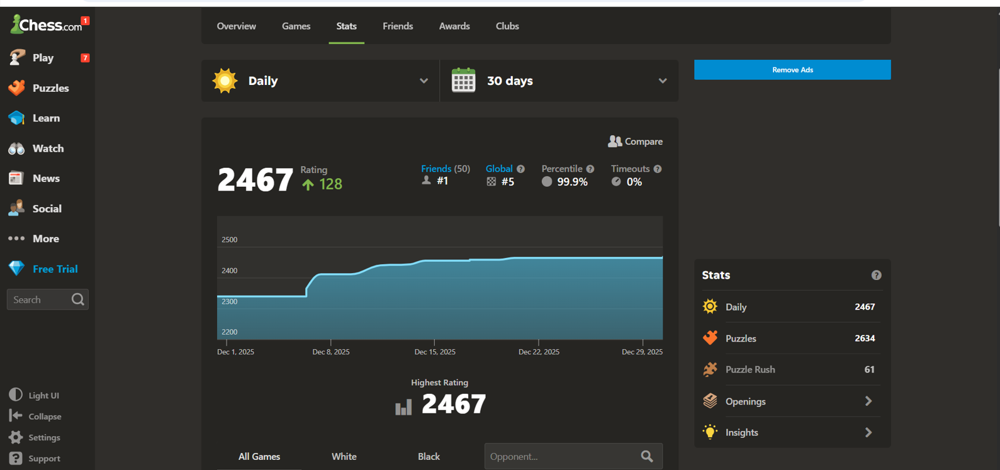
Exhibit Series D - The Royal Library
Three unpublished literary non-fiction manuscripts are known to exist within the Royal Archives. Publication has repeatedly been postponed, reportedly because the texts reveal an excessive amount of autobiographical information.
{kind=link}
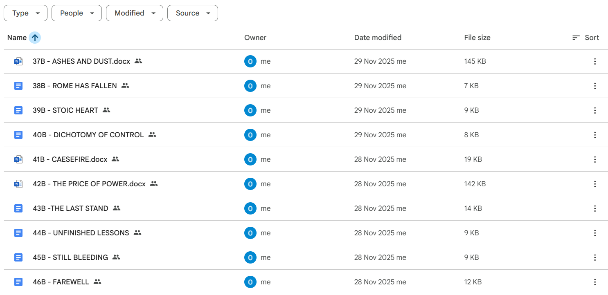
{kind=link}
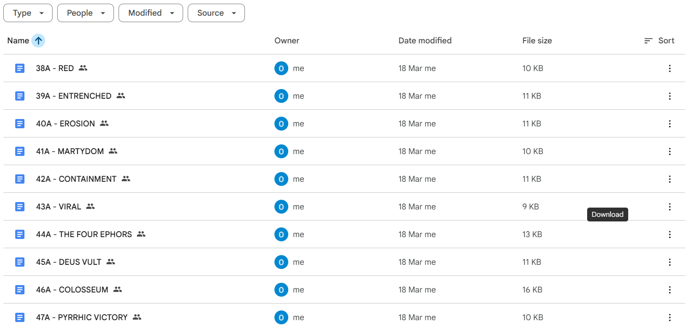
{kind=link}
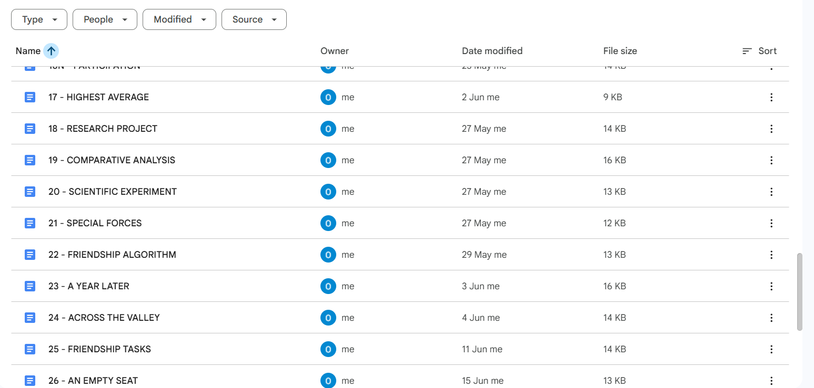
Exhibit Series E - The Royal War College
Court historians have long debated the origins of Orestis II's fascination with administration, logistics, and imperial governance. Alongside extensive reading of military and political classics - including The Art of War, Clausewitz's On War, and the works of various Roman and Byzantine historians - he devoted considerable time to practical simulation exercises through historical grand strategy games.
According to supporters, these exercises cultivated strategic thinking, long-term planning, and a healthy appreciation for supply lines. Critics maintain that they merely produced an unhealthy desire to restore extinct empires.
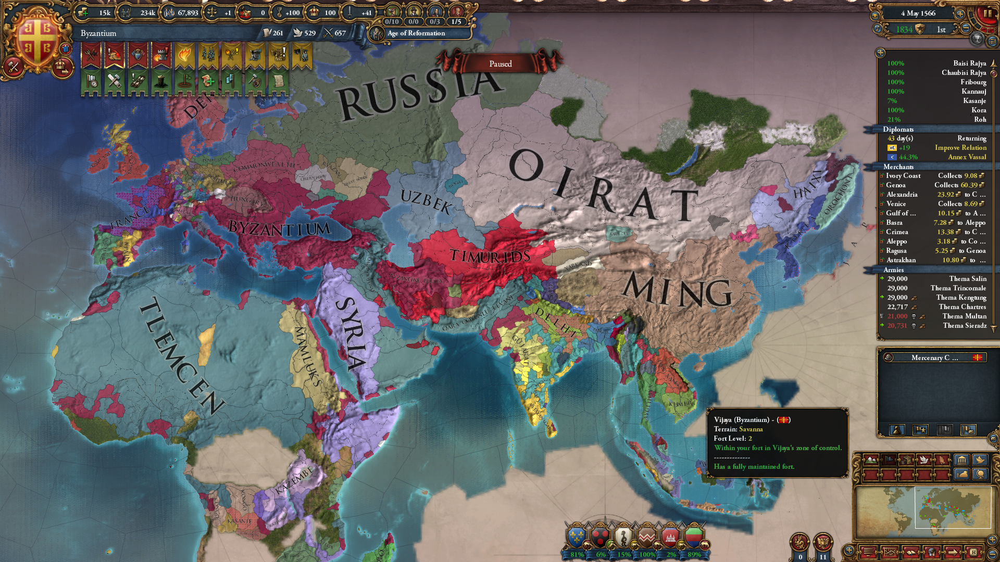
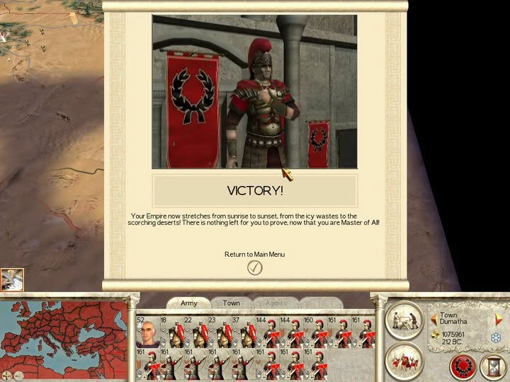